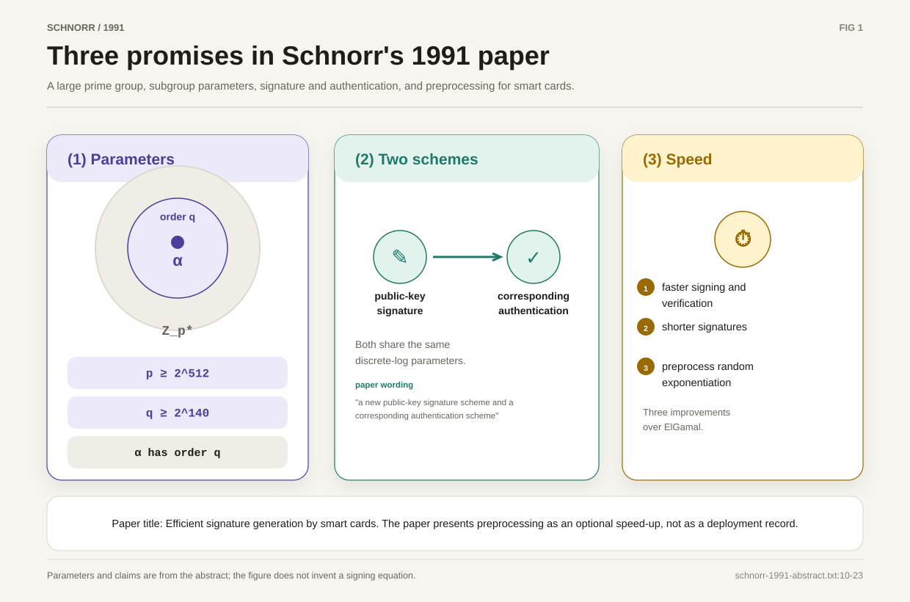
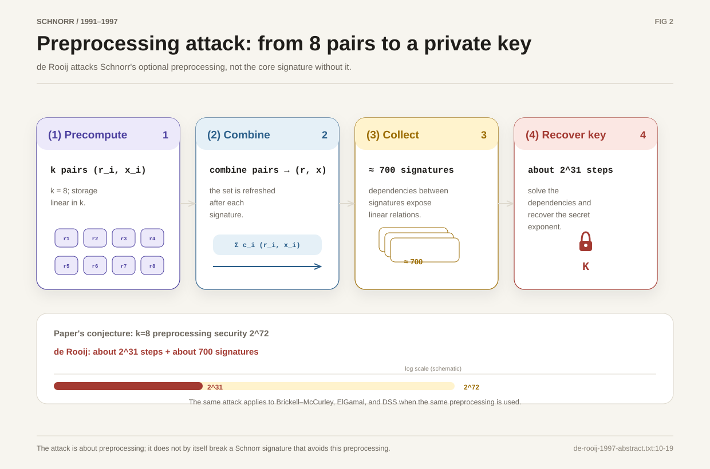

Principles
Algorithm: Schnorr Signature (Schnorr 签名). The paper presents a public-key signature scheme and a corresponding authentication scheme, both based on discrete logarithms in a subgroup of Z_p*. The parameters are not an arbitrary prime group: p must be sufficiently large, for example “p >= 2^512”; the base α must have order a sufficiently large prime q, for example “q >= 2^140”. The paper says: “We present a new public-key signature scheme and a corresponding authentication scheme that are based on discrete logarithms in a subgroup of units in Z_p* where p is a sufficiently large prime, e.g., p >= 2^512.” and “A key idea is to use for the base of the discrete logarithm an integer alpha in Z_p* such that the order of alpha is a sufficiently large prime q, e.g., q >= 2^140.”

Why it matters
Relative to ElGamal, the paper claims improvements in both the speed of signature generation and verification and the bit length of signatures. It says: “In this way we improve the ElGamal signature scheme in the speed of the procedures for the generation and the verification of signatures and also in the bit length of signatures.” A second design point is preprocessing: the signer can precompute a message-independent random exponentiation. The paper says: “We present an efficient algorithm that preprocesses the exponentiation of a random residue modulo p.” These are the paper's design claims, not an independent benchmark; this entry does not turn “faster/shorter” into a concrete factor.
Applications
The paper is titled “Efficient signature generation by smart cards”; its abstract gives a signature scheme, an authentication scheme, and an algorithm for preprocessing a random exponentiation. Together these point to a smart-card or constrained-signer setting. The paper reports no smart-card product, deployment count, side-channel test, or concrete implementation. This entry therefore treats “smart cards” only as the paper's target setting, not as a commercially deployed smart-card scheme.
Limits & attacks
de Rooij's 1997 attack targets Schnorr's optional preprocessing, not the core signature without it. The paper says: “In this paper an attack on these preprocessing algorithms is presented.” The attack recovers the secret key: “For k=8, this amounts to about 2^31 steps and 700 signatures”, and applies to “Brickell-McCurley, ElGamal, and DSS signatures as well, if the same preprocessing algorithm is used”. The same abstract records the paper's conjectured 2^72 security for k=8 preprocessing. The boundary: this is not an unconditional break of Schnorr signatures; it shows that the preprocessing parameters and usage can lower security, and the attack needs signatures or identification transcripts.

History
The article appears in Journal of Cryptology 4(3), January 1991, pages 161–174; the page records “Received: 17 August 1989” and “Revised: 15 March 1991”. The same page's additional information records “European patent application 89103290.6 from February 24, 1989.” and “U.S. patent number 4995082 of February 19, 1991.” This entry dates the text to the 1991 journal article; the 1989 patent application and the 1991 US patent are supplementary records on the same page, not the journal publication year, and do not automatically equal the paper's technical content.
Worked example & verification
Formal model and reproduction steps
[s=k^{-1}\big(H(m)+r d\big)\bmod n]
Schnorr Signature: the registered public parameters, key material or randomness, and message are mapped through the stated transformation to an output checked against the registered criterion. The worked example is a structural reproduction, not a new test vector; parameter ranges, standard versions and implementation details remain source-bound.
References
- Wikipedia search entry for Schnorr 签名. https://zh.wikipedia.org/w/index.php?search=Schnorr%20%E7%AD%BE%E5%90%8D
- Handbook of Applied Cryptography (Menezes, van Oorschot, Vanstone). https://www.cacr.math.uwaterloo.ca/hac/